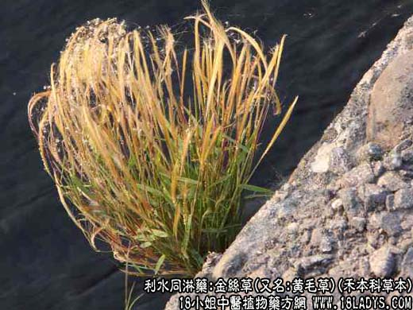

【中药概述】
金丝草，又名:黄毛草，禾本科草本，属利水同淋药。
【金丝草_中药金丝草_植物金丝草】
金丝草(禾本科)古籍名：金丝草《本草纲目》。
植物名：黄毛草。
生长环境：本品为多年生、簇生草本。常生于阴湿的、斜坡、岩缝或堤岸边。
入药部分：全草。
采集期：夏、秋。
自采地点：山岗。
性味：性凉，味平淡。
功能：清热、利水、通淋。
主治、用量和用法：1、小儿肝熱：干用5钱至1两、清水煎服；2、小儿湿热尿短：用法同上；3、疳积，配伍用；4、淋浊；干用1至2两，清水煎服。
验方：1、（治小儿湿热尿短方）金丝草5钱，灯心花4个，车前草5钱、旱莲草5钱，清水三碗半，煎成一碗，分三次服。
（方解）方中金丝草、灯心花清心利尿；旱莲草入肝肾清热；车前草利膀胱湿热。合为治膀胱湿热尿短之方。
（方歌）小儿湿热尿不长，金丝旱莲两草尝，灯心花合车前草，清除湿热尿正常。
2、（治小儿疳积方）金丝草5钱、扶儿草3钱、独脚金2钱、蜜枣5枚，清水两碗，煎成一碗作茶服。
（方解）本方金丝草平肝清心利尿，扶儿草、独脚金清肝理脾清疳积，蜜枣取其甘润，全方不削不优，为治疳积平稳之剂。
（方歌）小儿疳积肝熱多，金丝扶儿两草料，独脚金加蜜枣煎，清肝理脾积自愈。